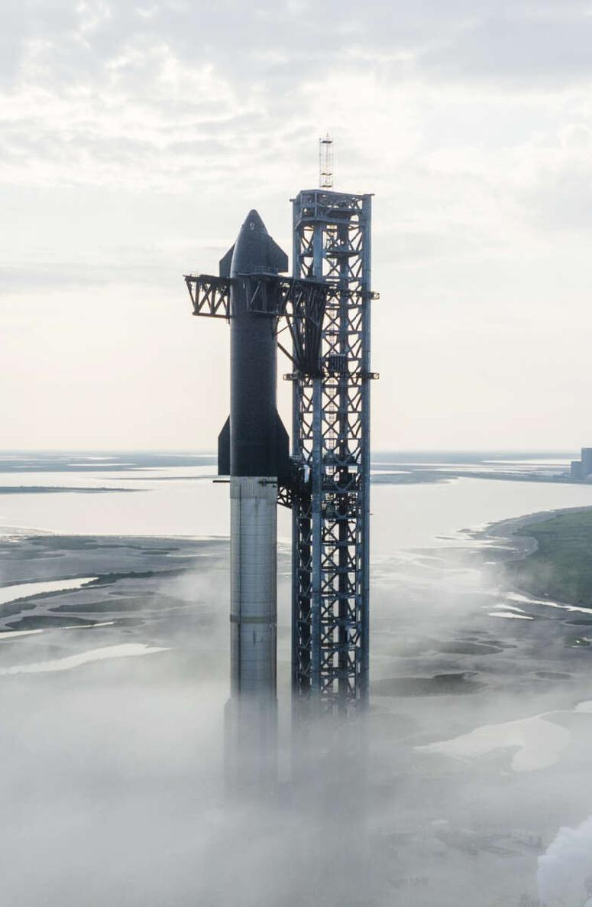

Elon Musk đã cho phép tôi theo sát ông trong hai năm, tham dự các cuộc họp, dành thời gian cho vô số cuộc phỏng vấn và trò chuyện đêm khuya, cung cấp email và tin nhắn, đồng thời khuyến khích bạn bè, đồng nghiệp, người thân, đối thủ và vợ cũ của ông trò chuyện với tôi. Ông ấy không yêu cầu, cũng không đọc cuốn sách này trước khi xuất bản và không hề kiểm soát nội dung.
Tôi biết ơn tất cả những người được liệt kê trong nguồn đã dành cho tôi những buổi phỏng vấn. Tôi muốn gửi lời cảm ơn đặc biệt đến một số người đã hỗ trợ, cung cấp ảnh và hướng dẫn: Maye Musk, Errol Musk, Kimbal Musk, Justine Musk, Claire Boucher (Grimes), Talulah Riley, Shivon Zilis, Sam Teller, Omead Afshar, James Musk, Andrew Musk, Ross Nordeen, Dhaval Shroff, Bill Riley, Mark Juncosa, Kiko Dontchev, Jehn Balajadia, Lars Moravy, Franz von Holzhausen, Jared Birchall và Antonio Gracias.
Crary Pullen là biên tập ảnh, như cô ấy đã làm với nhiều cuốn sách trước đây của tôi. Tất cả đều được xuất bản bởi Simon & Schuster, nơi tôi sẽ mãi mãi trung thành vì những giá trị và đội ngũ tuyệt vời của họ, trong trường hợp này là: Priscilla Painton, Jonathan Karp, Hana Park, Stephen Bedford, Julia Prosser, Marie Florio, Jackie Seow, Lisa Rivlin, Kris Doyle, Jonathan Evans, Amanda Mulholland, Irene Kheradi, Paul Dippolito, Beth Maglione và linh hồn luôn hiện hữu của Alice Mayhew. Judith Hoover đã quay trở lại làm việc sau khi nghỉ hưu theo yêu cầu của tôi để làm biên tập viên. Tôi cũng muốn cảm ơn người đại diện của mình, Amanda Urban, cùng với các đồng nghiệp quốc tế Helen Manders và Peppa Mignone, và trợ lý của tôi tại Tulane, Lindsey Billips.
Và, như mọi khi, Cathy và Betsy.
/
Walter Isaacson đã viết tiểu sử của Jennifer Doudna, Leonardo da Vinci, Steve Jobs, Albert Einstein, Henry Kissinger và Benjamin Franklin. Ông cũng là tác giả của cuốn The Innovators và đồng tác giả của cuốn The Wise Men. Ông từng là biên tập viên của Time, CEO của CNN và CEO của Viện Aspen. Ông đã được trao tặng Huân chương Nhân văn Quốc gia năm 2023. Ông là giáo sư tại Tulane và sống cùng vợ tại New Orleans.
www.SimonandSchuster.com
www.SimonandSchuster.com/Authors/Walter-Isaacson

.